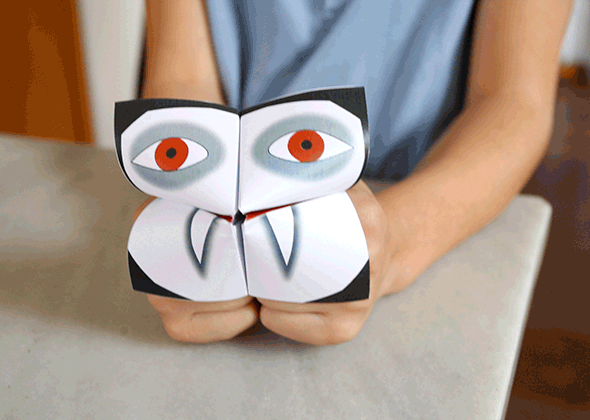

Dieser Vampir sagt Dir wonach Dein Blut schmeckt. Hier findest Du die Druckvorlage auf deutsch und hier in unserem Videokanal kannst Du Hannah sehen, wie sie ihn faltet.



Schneide den Hai aus und male ihn an. Mache einen Schnitt auf der durchgezogenen Linie und steck die Flosse durch. Klebe sie an einer Seite fest.…
Weiterlesen →
Schnecken als Kindergeburtstags Dekoration oder einfach zum basteln. Ganz einfach! Druck den .pdf min. 80g (farbig oder weisses) Papier ohne den Masstab zu verändern! Es gibt…
Weiterlesen →
Für Ostern haben wir unsere Schnecken mit Krepppapier getunt. Als Ostertischdecoration und Tischkarte. Druckvorlage in unserem ersten Schneckenpost . Hannah hilft beim zusammen bauen mit diesem…
Weiterlesen →
Hier eine Druckvorlage für einen Hubschrauberlandeplatz für das kleine Modul des Hauses. Das Papier kann man in die Rillen schieben um Kleber zu vermeiden. (So kannst…
Weiterlesen →
Wir haben schon einmal eine paar Gesichter mit Halskette veröffentlicht. Unsere Idee kommt von Gina, die einen großartigen Blog namens willlowday hat. Heute zeigen wir Euch…
Weiterlesen →
Hier kommt dank Vitra echtes Design in die Puppenstuben. Auf der .pdf Vorlage , findet Ihr den Elefanten von den Architekten Ray und Charles Eames. Wir…
Weiterlesen →